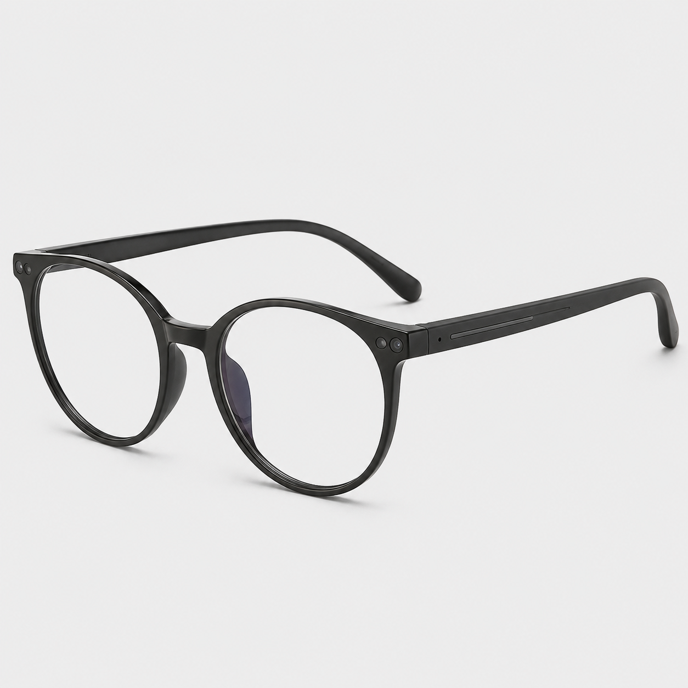
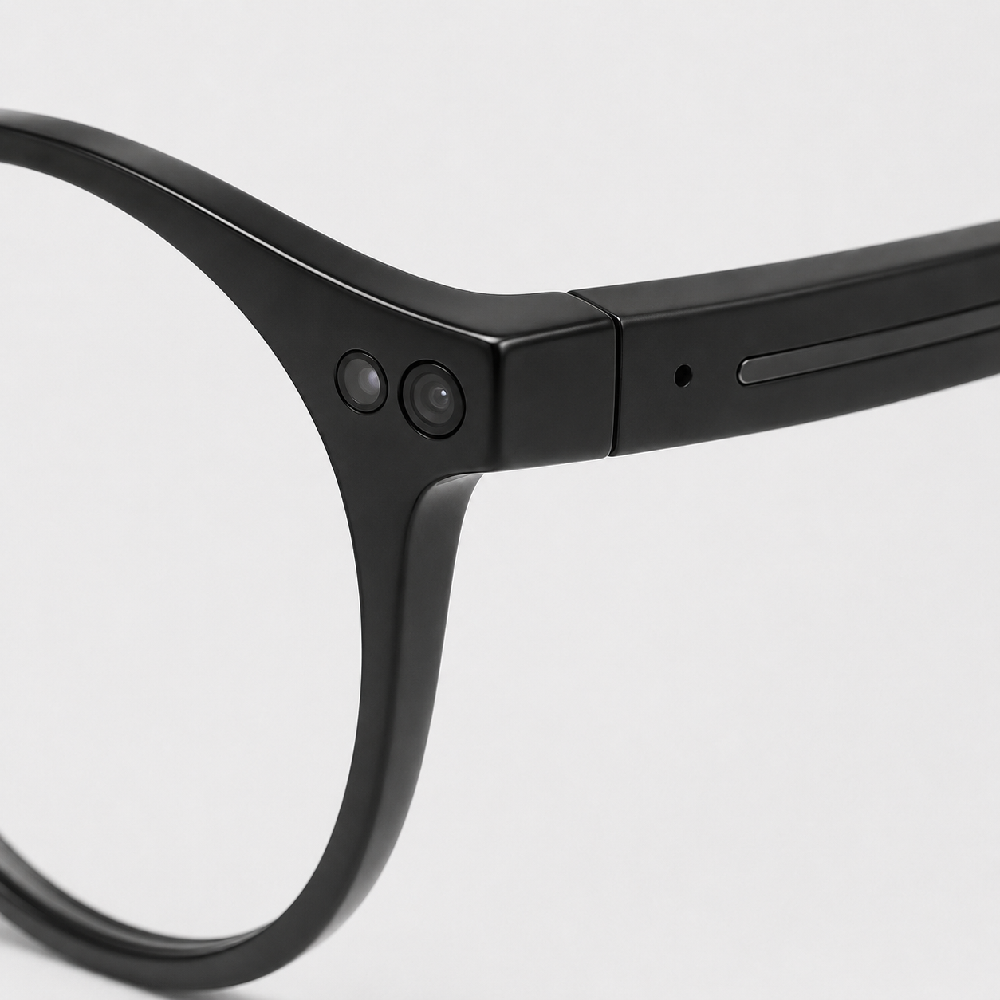
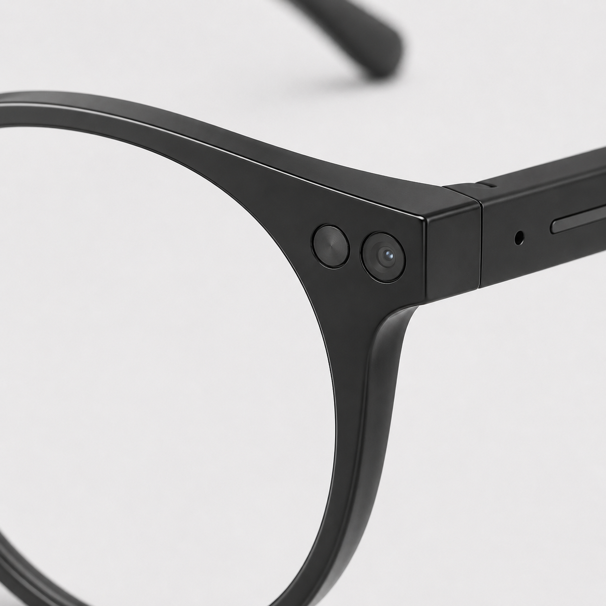
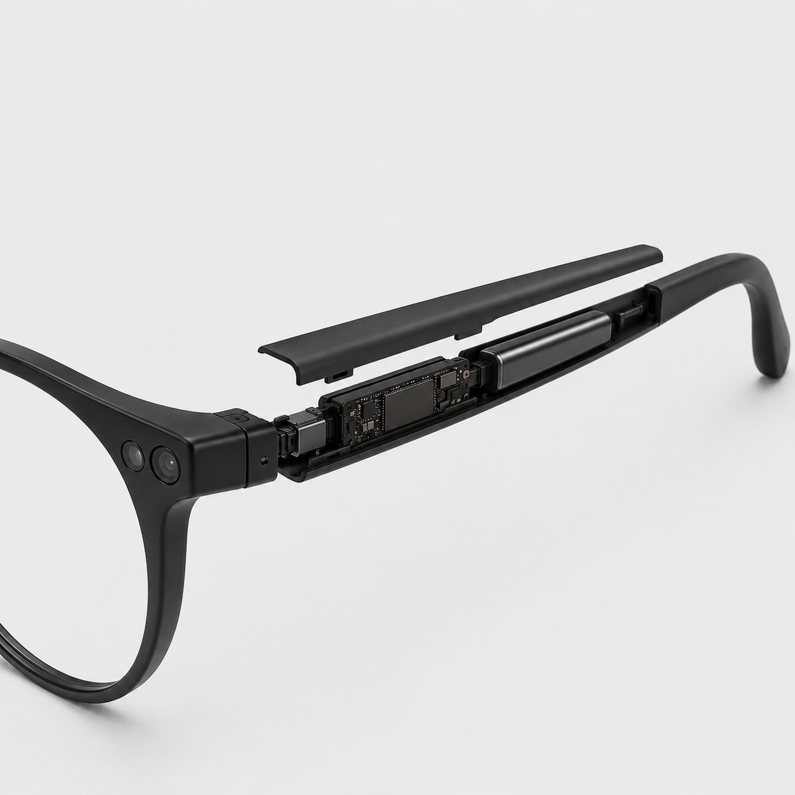
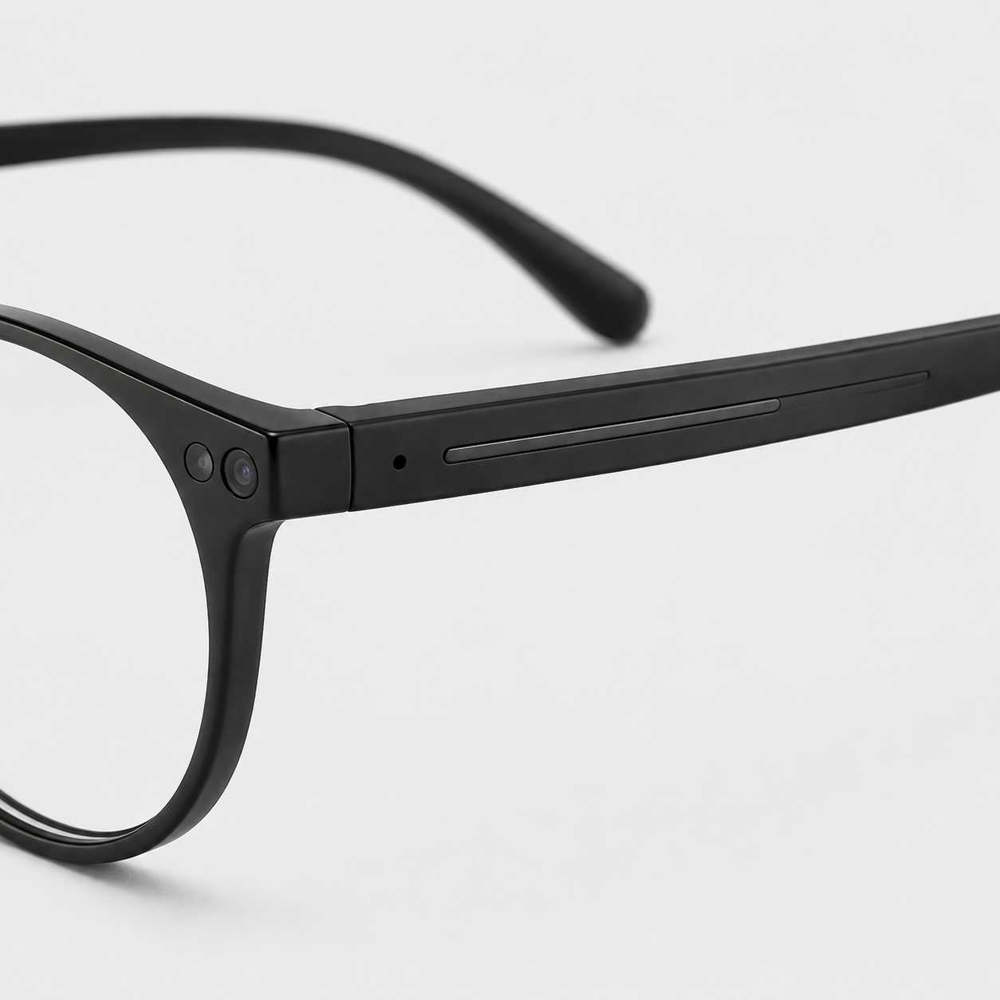
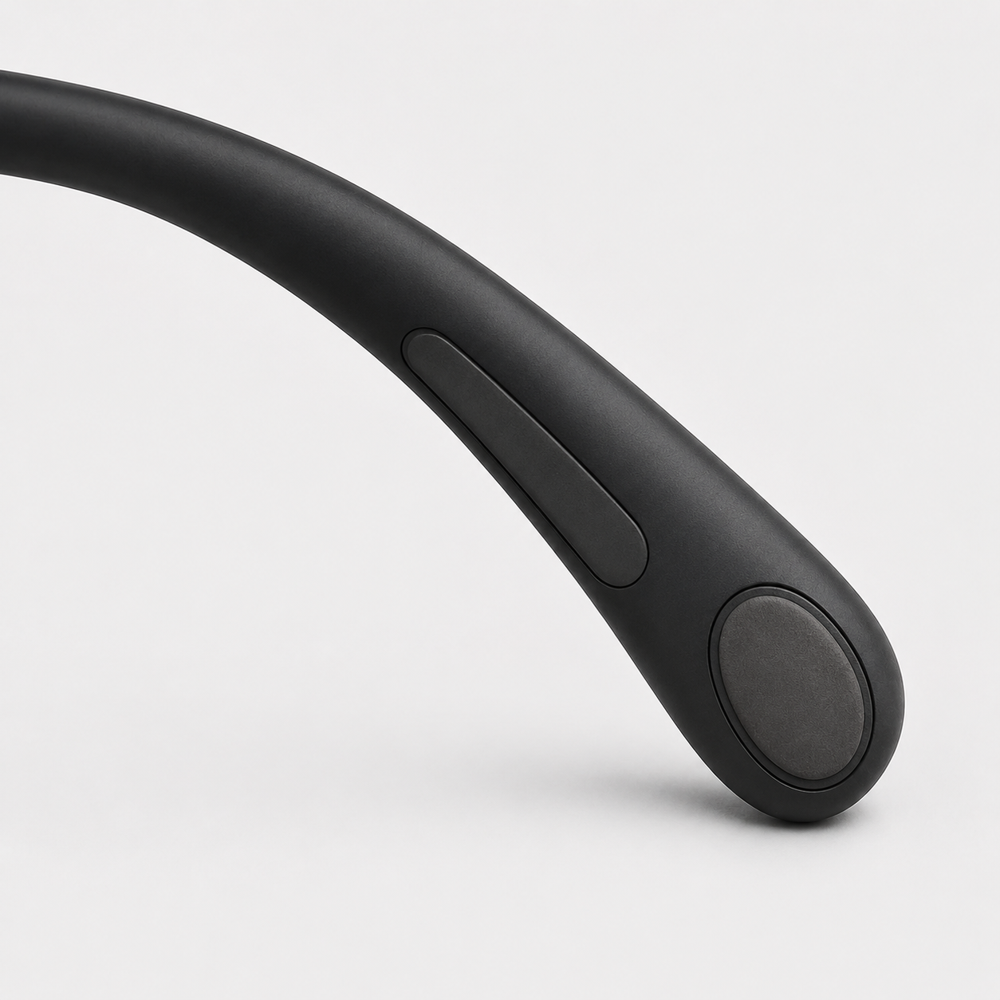

대화 타이밍
말이 겹치거나 침묵이 길어질 때 반응 시점을 더 쉽게 파악하도록 돕습니다.
Everyday Smart Glasses
복잡한 사회적 신호를 조용한 감각 언어로 바꾸는 AI 스마트 안경
대화의 타이밍, 감각 부담, 분위기 변화를 사용자만 느낄 수 있는 햅틱 신호로 알려줍니다.
Product Concept
SYNORA는 대화 중 발생하는 복잡한 사회적 신호를 감지하고, 사용자만 느낄 수 있는 햅틱 진동으로 알려주는 AI 스마트 안경입니다.
SYNORA는 사용자를 고치거나 정상적인 대화 방식에 맞추려는 제품이 아니라, 사용자가 자신의 방식으로 사회적 흐름을 이해할 수 있도록 돕는 조용한 보조 기술입니다.

Why SYNORA
복잡한 순간을 더 조용하고 예측 가능하게 정리해줍니다.
말이 겹치거나 침묵이 길어질 때 반응 시점을 더 쉽게 파악하도록 돕습니다.
소음, 빠른 말소리, 피로 누적처럼 부담이 커지는 순간을 먼저 알려줍니다.
표정, 말투, 흐름의 변화 가능성을 조용한 신호로 전달합니다.
Core Features
01
상대의 말이 끝났는지, 침묵이 길어졌는지, 지금 반응하거나 질문해도 되는 타이밍인지 감지합니다.

02
소음, 빠른 대화, 여러 말소리 겹침, 긴장과 피로 누적을 감지해 감각 과부하 가능성을 알려줍니다.

03
표정 변화, 목소리 톤 변화, 분위기 변화 가능성을 감지하고, 감정을 단정하지 않고 변화 신호만 전달합니다.

Haptic System
여러 모드를 함께 사용할 때 신호가 헷갈리지 않도록, SYNORA는 진동 횟수뿐 아니라 리듬, 세기, 여운을 다르게 설계했습니다.
언제 말하고, 언제 질문할지 알려주는 모드
대화 흐름 모드는 짧고 딱 끊기는 신호로 통일됩니다.
소음, 말소리 겹침, 피로, 과부하를 알려주는 모드
감각 안정 모드는 반복되는 진동으로 대화 흐름 신호와 구분됩니다.
표정 변화, 목소리 변화, 분위기 변화를 알려주는 모드
끝에 아주 약한 여운이 남아 대화 흐름 모드의 짧은 진동과 구분됩니다.
Priority Logic
여러 신호가 동시에 발생하면 SYNORA는 모든 진동을 한꺼번에 보내지 않습니다. 사용자에게 가장 중요한 신호 하나만 선택해 전달합니다.
감각 과부하나 휴식 필요는 사용자의 부담과 직접 연결되기 때문에 가장 우선적으로 전달됩니다. 사용자가 과부하 상태라면 말할 타이밍보다 쉬거나 조절하는 것이 먼저입니다.
소음 증가 + 대화 타이밍 + 표정 변화가 동시에 감지됨
감각 안정 신호만 먼저 전달
사용자가 부담을 줄인 뒤 대화 흐름을 다시 파악할 수 있음
Signal Summary
대화 흐름 모드는 짧고 딱딱 끊기는 진동, 감각 안정 모드는 부드럽게 반복되는 진동, 사회 환경 적응 모드는 짧은 진동 뒤 잔잔한 여운으로 구분됩니다.
그래서 여러 모드를 함께 사용해도 단순히 진동 횟수만 외우는 것이 아니라, 진동의 리듬과 느낌으로 신호를 구분할 수 있습니다.
Silent Interface
진동은 SYNORA가 사용자에게 보내는 알림이고, 터치는 사용자가 SYNORA에게 보내는 명령입니다.
Design Details
카메라는 기존 안경 디테일 안에 자연스럽게 숨겨져, 부담 없이 일상 속에서 착용할 수 있습니다.


Scenarios
여러 사람이 빠르게 말할 때 반응 타이밍을 짧은 진동으로 알려줍니다.
주변 소음과 말소리가 많아질 때 감각 자극 증가를 조용히 알려줍니다.
분위기 변화 가능성을 알려주어 확인 질문을 할 수 있도록 돕습니다.
Closing Message
SYNORA는 사용자가 자신의 방식으로 대화에 참여할 수 있도록 돕는 조용한 보조 기술입니다.
프로젝트 보기